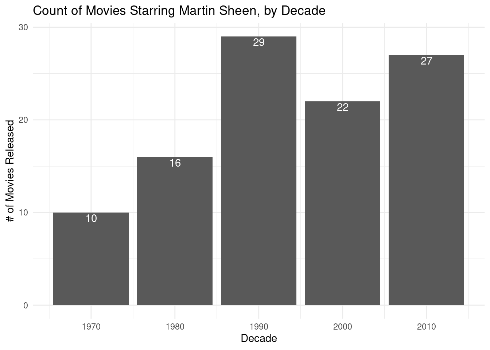

3 R Markdown in Action
In this example, we will use SQL to extract data from a database (SQLite file) and R to analyze the data to determine which actor or actress was most likely to appear in a Martin Sheen movie, other than Martin Sheen himself. This exercise is loosely based on the 2020 version of Harvard’s open CS50x online course.6
This is Martin Sheen, potentially best known as the father of Charlie Sheen, also a famous actor.
First, we need to make a connection to the database:
db_file <- "src/data/movies.db"
con <- DBI::dbConnect(RSQLite::SQLite(), db_file)Let’s start by extracting the data from the database file we need to conduct this analysis into the movie_data variable:
select movies.id as movie_id
,movies.title as movie_title
,movies.year as movie_year
,people.name as star_name
,people.birth as star_dob
from movies
join stars on stars.movie_id = movies.id
join people on stars.person_id = people.id;The movie_data data frame contains the following data:
head(movie_data)## movie_id movie_title movie_year star_name star_dob
## 1 15724 Dama de noche 1993 Rafael Sánchez Navarro NA
## 2 15724 Dama de noche 1993 Cecilia Toussaint 1958
## 3 15724 Dama de noche 1993 Miguel Córcega 1929
## 4 15724 Dama de noche 1993 Regina Orozco 1964
## 5 31458 El huésped del sevillano 1970 Malik Abidin NA
## 6 31458 El huésped del sevillano 1970 María José Alfonso 1940With the data in an R data frame, we can identify all movies starring Martin Sheen by name and ID by:
- Filtering
movie_datato only records wherestar_nameis ‘Martin Sheen’ andstar_dobis 1958. - Keeping only the
movie_idandmovie_titlefields. - De-duplicating the results to ensure one record per unique combination of
movie_id,movie_title, andmovie_year.
library(dplyr)
martin_sheen_movies <- movie_data %>%
filter(star_name == "Martin Sheen", star_dob == 1940) %>%
select(movie_id, movie_title, movie_year) %>%
distinct()
head(martin_sheen_movies)## movie_id movie_title movie_year
## 1 67497 No Drums, No Bugles 1972
## 2 69084 Pickup on 101 1972
## 3 69158 Rage 1972
## 4 69762 Badlands 1973
## 5 71745 The Legend of Earl Durand 1974
## 6 74292 The Cassandra Crossing 1976This is how you would do the same thing in Python, for example:
import pandas as pd
movies = r.movie_data
movies = movies[movies["star_name"] == "Martin Sheen"]
movies = movies[movies["star_dob"] == 1940]
movies = movies[["movie_id", "movie_title", "movie_year"]]
movies = movies.drop_duplicates()
print(movies.head(6))## movie_id movie_title movie_year
## 7089 67497 No Drums, No Bugles 1972
## 11651 69084 Pickup on 101 1972
## 11869 69158 Rage 1972
## 13400 69762 Badlands 1973
## 19038 71745 The Legend of Earl Durand 1974
## 25605 74292 The Cassandra Crossing 1976The script below counts the number of Martin Sheen movies released, by decade, and plots the result.
library(ggplot2)
movies_by_decade <- martin_sheen_movies %>%
mutate(decade = (movie_year %/% 10) * 10) %>%
group_by(decade) %>%
tally()
ggplot(movies_by_decade, aes(decade, n)) +
geom_col() +
geom_text(aes(label = n), vjust = 1.2, color = "white") +
theme_minimal() +
labs(
x = "Decade",
y = "# of Movies Released",
title = "Count of Movies Starring Martin Sheen, by Decade"
)
Given that listing of movies, let’s identify which actor or actress other than Martin Sheen appears the most times:
most_frequent_costar <- movie_data %>%
inner_join(martin_sheen_movies, by = c("movie_id", "movie_title", "movie_year")) %>%
filter(star_name != "Martin Sheen") %>%
group_by(star_name) %>%
tally() %>%
filter(n == max(n))
as.list(most_frequent_costar)## $star_name
## [1] "Phil Cousineau"
##
## $n
## [1] 4It’s this fellow here.
To finish, up, let’s identify which four movies Martin Sheen and Phil Cousineau appeared in together:
which_four_movies <- movie_data %>%
inner_join(martin_sheen_movies, by = c("movie_id", "movie_title", "movie_year")) %>%
filter(star_name == "Phil Cousineau") %>%
select(movie_id, movie_title) %>%
distinct()
knitr::kable(which_four_movies)| movie_id | movie_title |
|---|---|
| 4720236 | American Hercules: Babe Ruth |
| 5092962 | The Hammer of Hank Aaron |
| 5355018 | The Immortal: Ted Williams |
| 5355180 | Iron Knight: Lou Gehrig |